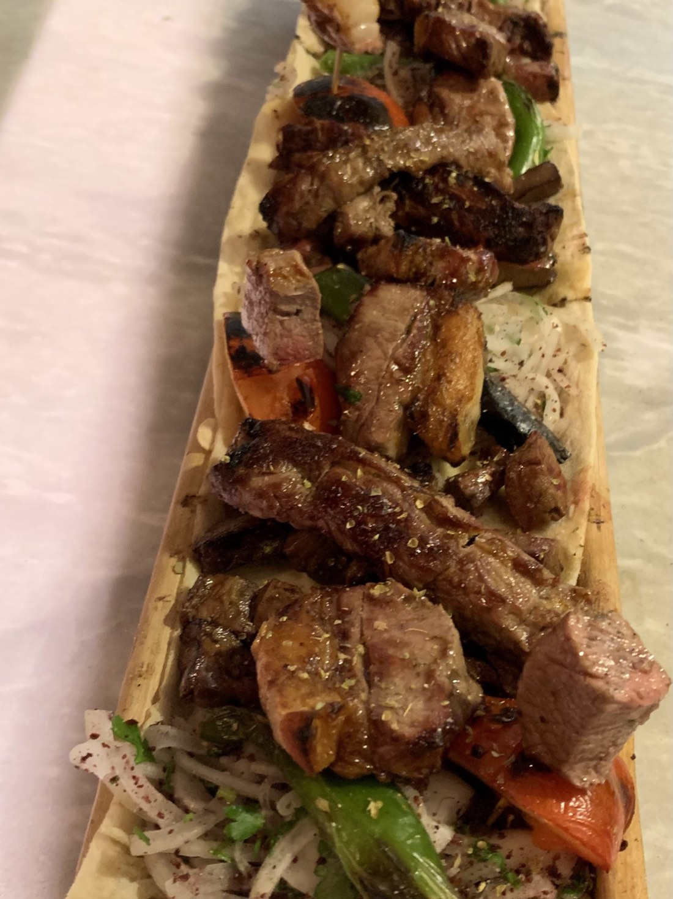
Ocakbaşı
Kömür ateşinde Adana, kuzu şiş ve közlenmiş patlıcan.
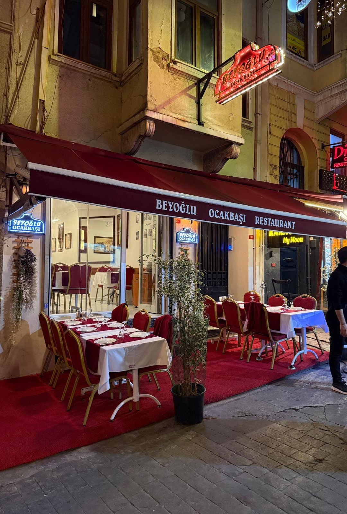
1990'dan beri, Bekar Sokak No:20
Lezzet, huzur ve mutluluğun ortak noktası.
Hemen Ara: 0212 249 30 30İstiklal'den Bekar Sokak'a dönün. Gerisi közün sesi, sofranın bereketi ve uzayan akşamlar.
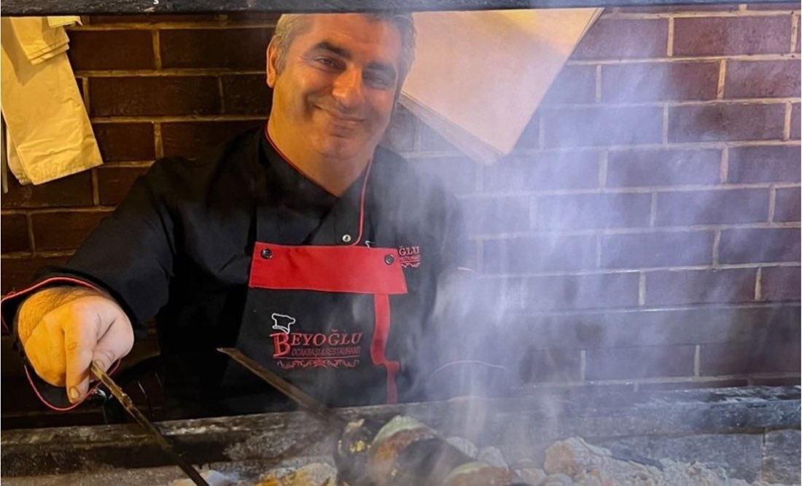
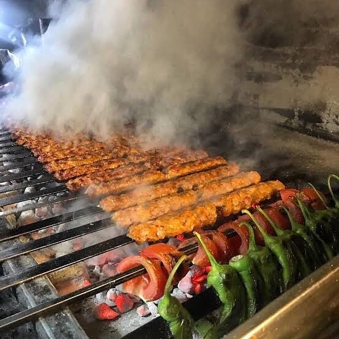
Her şişin, her közün ve her tabağın arkasında emeğini işine katan bir usta var. Ocak salonun ortasında; Adana da kuzu şiş de gözünüzün önünde pişer.
1990'dan beri değişmeyen bir şey var: iyi bir sofra herkesi aynı yerde buluşturur.
Menüye Göz AtınOcakbaşına oturun, mezeleri ortaya söyleyin, gecenin geri kalanını bize bırakın.

Kömür ateşinde Adana, kuzu şiş ve közlenmiş patlıcan.
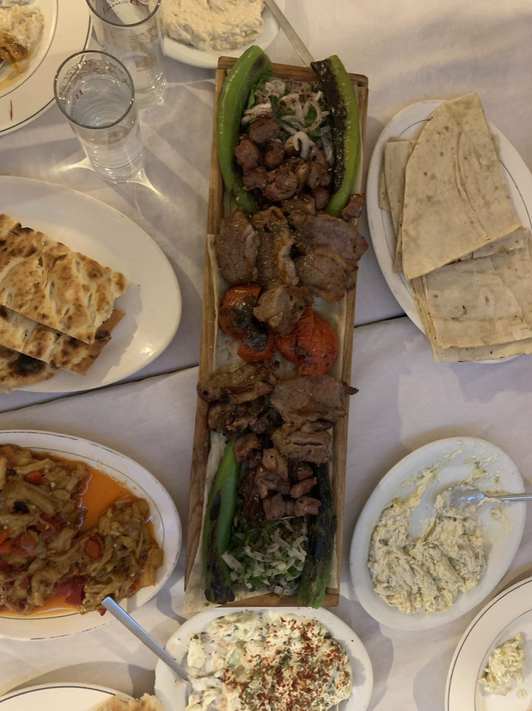
Haydari, atom, muhammara, şakşuka. Ortaya söylenir, paylaşılır.
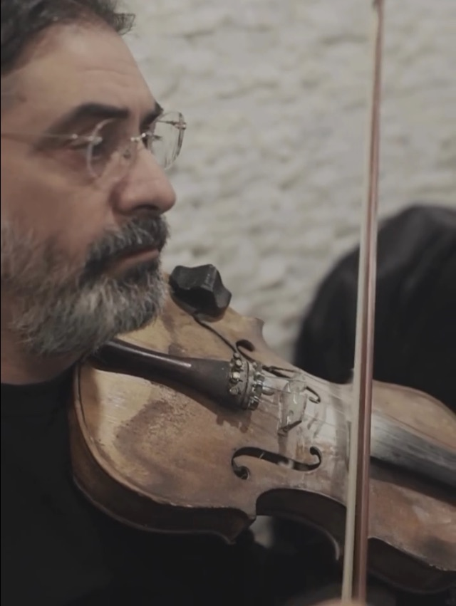
Her Cumartesi şarkılar ve uzun, keyifli geceler.
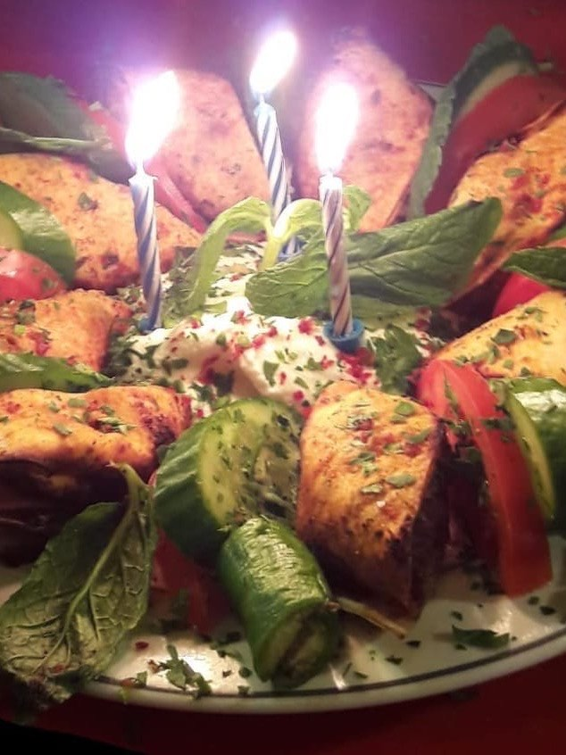
Doğum günü, iş yemeği, eski dostlar. Kişi sayısını söyleyin, masayı kuralım.
Otuz yılı aşkın süredir aynı sokakta, aynı ocağın başında.
3.775 misafirimizin yorumuyla.
Şişler ocakta, siz masada. Pişirmeyi baştan sona görürsünüz.
Taksim'den yürüyerek gelin: İstiklal Caddesi, sonra Bekar Sokak.
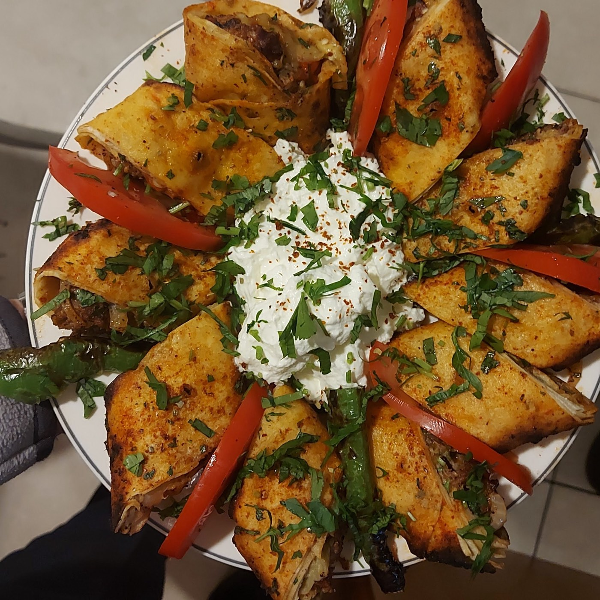
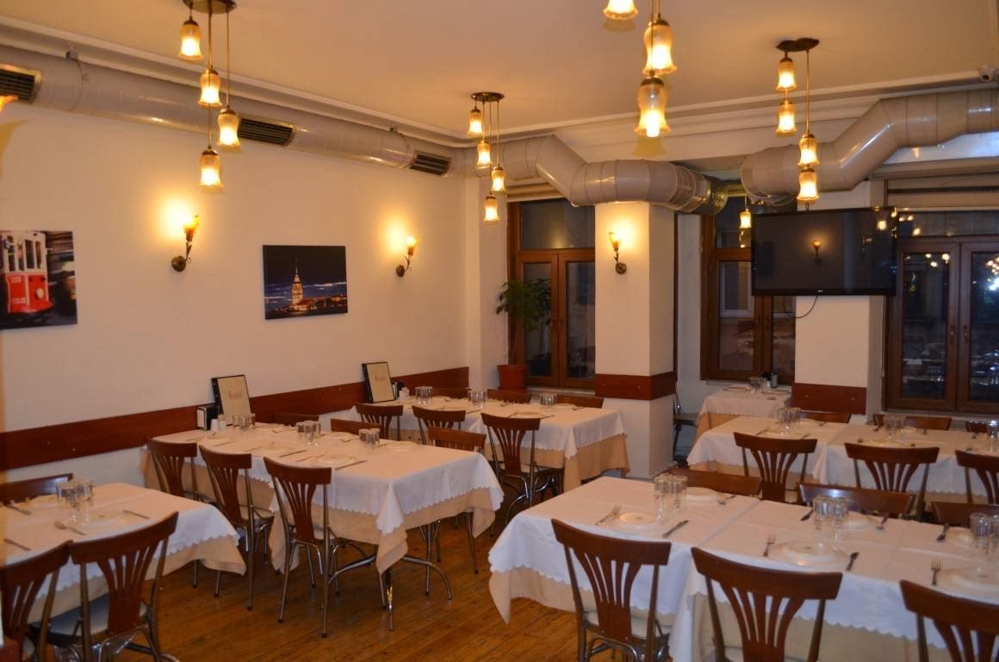
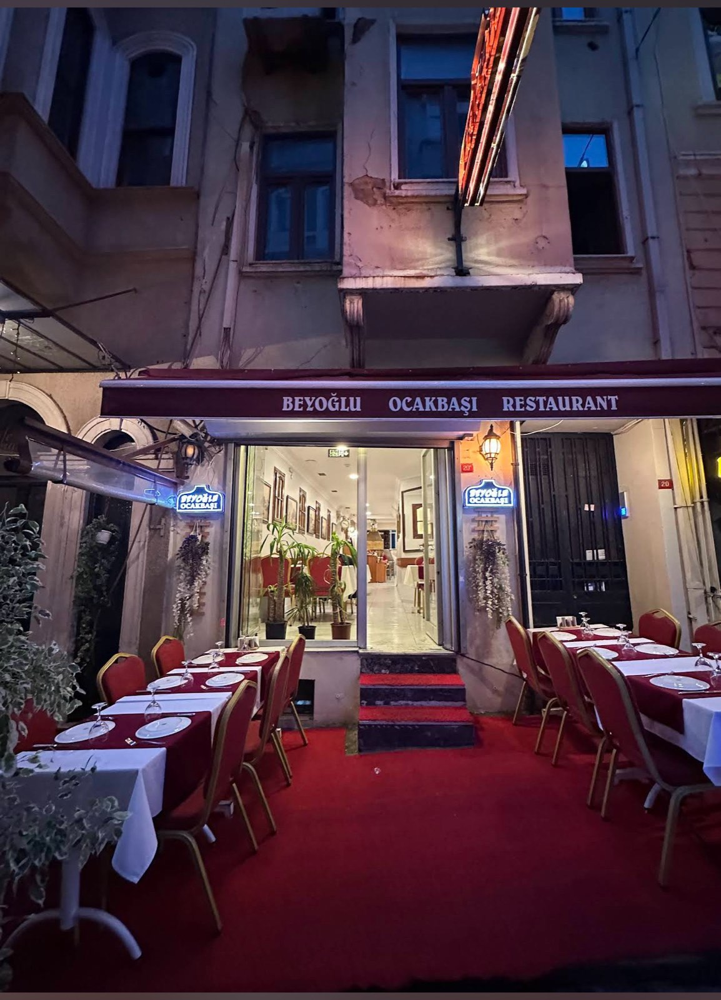
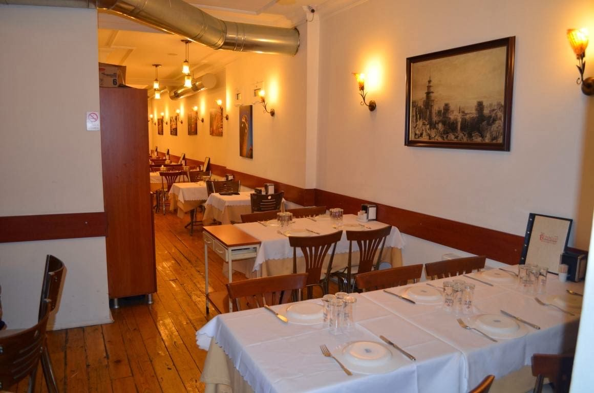
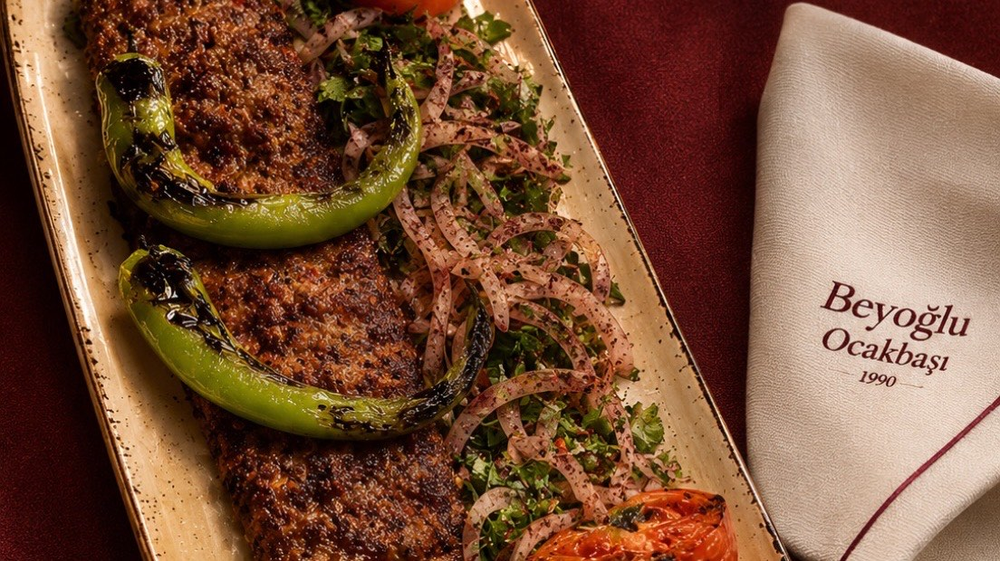
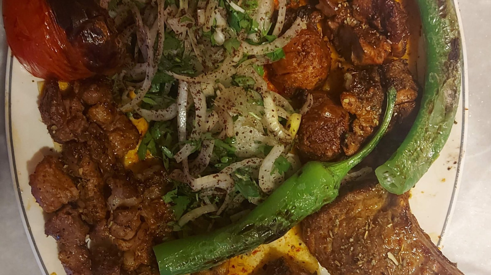
Akşamları ve Cumartesi geceleri öneriyoruz. 0212 249 30 30'u arayın, Instagram'dan yazın ya da formu doldurun.
Cumartesi akşamları şarkılı gecelerimiz var. O akşam için yerinizi önceden ayırtın.
Masalarda dijital menünün QR kodu var. Gelmeden önce merak ederseniz bizi arayın.
Birkaç gün önceden arayın. Kişi sayısına göre masayı birlikte planlayalım.
Taksim Meydanı'ndan İstiklal Caddesi'ne girin, birkaç dakika yürüyüp Bekar Sokak'a dönün. No:20'deyiz.
Formu gönderin, sizi arayıp masanızı teyit edelim. Aynı akşam için telefon daha hızlı.